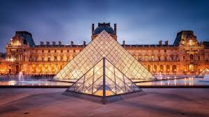
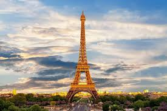

Home Page
Paris.France
Paris, the capital of France, is a vibrant city known for its iconic landmarks, world-class museums, and rich cultural scene. Visitors can explore famous sites like the Eiffel Tower and Louvre Museum, stroll through charming neighborhoods, enjoy delicious French cuisine, and experience the city's artistic atmosphere. Paris is a city renowned for its romantic ambiance, historical landmarks, world-class art and museums, exquisite cuisine, and vibrant culture. These elements combine to create a captivating experience for visitors, making it a top travel destination.



Activies:
- Taking tours of the city: A Paris tour can include iconic landmarks like the Eiffel Tower, Louvre Museum, and Arc de Triomphe, as well as cultural experiences like Seine River cruises and visits to Montmartre. You can explore art at the Musee d’Orsay, admire the stained glass of Sainte-Chapelle, and even venture to the Palace of Versailles. Enjoy a variety of activities, from guided tours to self-guided explorations, and savor Parisian cuisine along the way.
- Sight seeing: For sightseeing in Paris, visitors should prioritize iconic landmarks like the Eiffel Tower and the Louvre Museum, while also exploring neighborhoods like Montmartre and the Latin Quarter
- Taking in the nature:Visitors to Paris can enjoy a variety of nature spots, including parks, gardens, and forests. Some popular options include the Luxembourg Gardens, Parc des Buttes-Chaumont, Parc Monceau, Bois de Vincennes, and Bois de Boulogne.For a more expansive natural experience, the Fontainebleau Forest offers the largest natural space in the Île-de-France region.
- Try new foods:Visitors to Paris should definitely try classic French dishes like croissants, macarons, French onion soup, and steak frites.
Weather Information